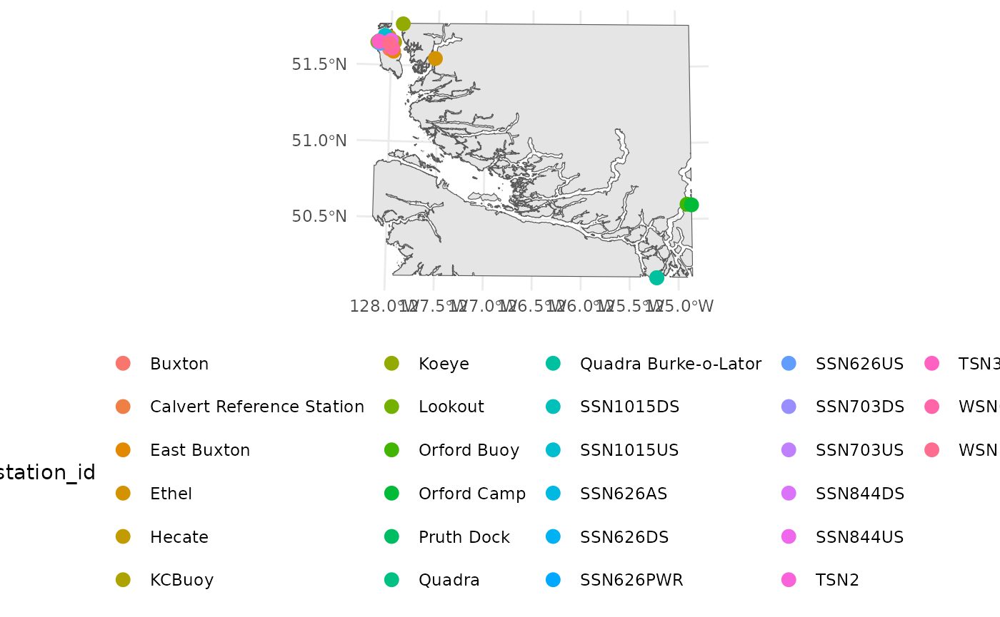

Viewing Recent Stations
Source:vignettes/articles/Viewing-Recent-Stations.Rmd
Viewing-Recent-Stations.RmdOne of the endpoints accessed by the hakaiApi package is
the stations endpoint. This endpoint provides metadata about stations,
including their geographic coordinates. This information can be useful
for visualizing the locations of stations on a map. In R we can either
make static maps using ggplot2 or interactive maps using
mapview to quickly visualize the locations of stations. We
need to install the bcmaps package to get a base map of
British Columbia as well as the sf package to handle
spatial data and the ggplot2 and mapview
packages for visualization.
library(hakaiApi)
library(ggplot2)
library(mapview)
library(bcmaps)
#> Loading required package: sf
#> Linking to GEOS 3.12.1, GDAL 3.8.4, PROJ 9.4.0; sf_use_s2() is TRUE
#> Support for Spatial objects (`sp`) was removed in {bcmaps} v2.0.0. Please use `sf` objects with {bcmaps}.
library(sf)We first need to access the stations endpoint using the
Client class from the hakaiApi package. We can
then use the get_stations method to retrieve a data frame
of stations. If you don’t have the sf package installed you will
prompted to install that at this point.
hakai_client <- hakaiApi::Client$new("https://hecate.hakai.org/api")
stations <- hakai_client$get_stations()Because we want to plot the stations and some sensible basemap, we
need to created a clipped polygon of British Columbia that contains all
the stations. We can do this by creating a bounding box around the
stations and then using the st_intersection function from
the sf package to clip the BC polygon to that bounding
box.
bc <- bcmaps::bc_bound_hres()
#> Creating directory to hold bcmaps data at /home/runner/.cache/R/bcmaps
#> Reading the data using the read_sf function from the sf package.
points_bbox <- st_bbox(stations) |>
st_as_sfc() |>
st_transform(st_crs(bc))
clipped_polygon <- st_intersection(bc, points_bbox)Once we have the clipped polygon, we can plot the stations on top of
it using ggplot2 or mapview. Here is an
example of a static map using ggplot2:
ggplot() +
geom_sf(data = clipped_polygon) +
geom_sf(data = stations, aes(color = station_id), size = 3) +
theme_minimal() +
theme(legend.position = "bottom")
And here is an example of an interactive map using
mapview:
mapview::mapview(stations)